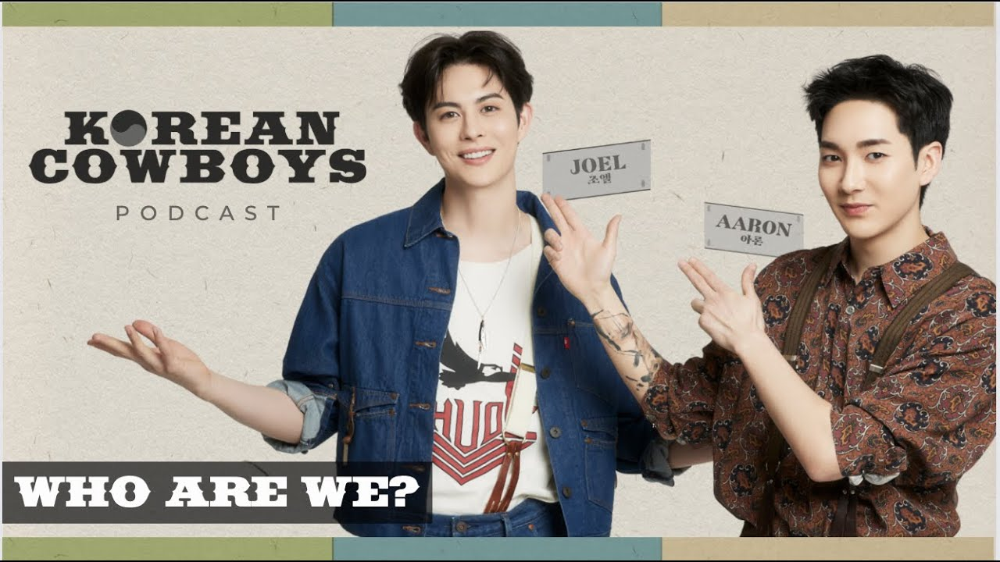
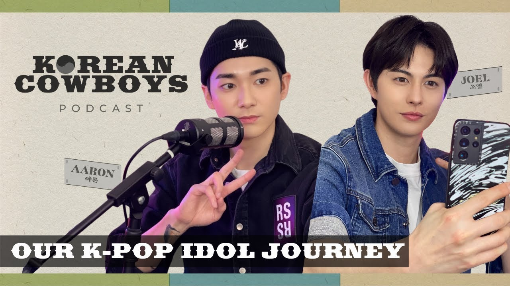

What should we talk about?
Episode
- 오름차순ascending order
- descending order
-

EP 1. WHO ARE WE?
2022. 3. 25. they explain who they are, how they ended up in Korea, how they ended up as K-Pop idols, and why you should tune in to Korean Cowboys Podcast! view more -

EP 2. OUR K-POP IDOL JOURNEY
2022. 4. 1. This week, hosts Aaron and Joel dive into opening up about their personal experiences throughout their K-Pop Idol Journey. From discovery, reflecting back on their trainee period, to debut; the Korean Cowboys share about K-Pop in a new light, through their lenses. view more -